Зачем марксизму кино?
И зачем кино —
марксизм?
Что общего у этих фильмов?
Не жанр. Не страна. Не эпоха — между крайними ровно сто лет, 1925–2025. И всё же их роднит одно. И это «одно» — не про искусство.
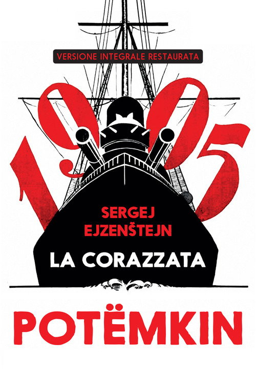
1925Броненосец Потёмкин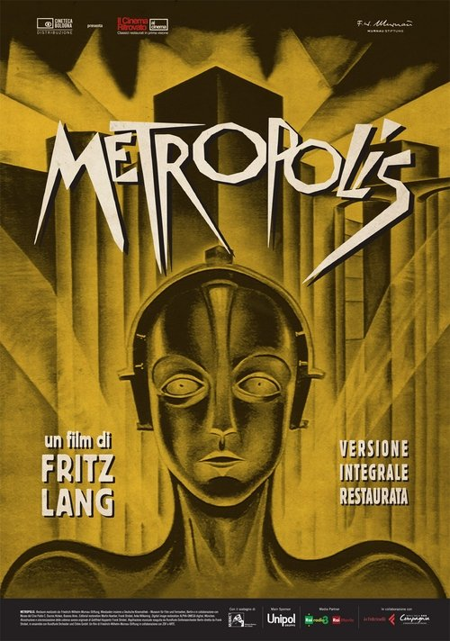
1927Метрополис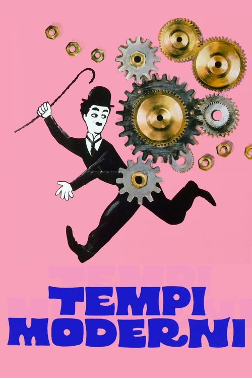
1936Новые времена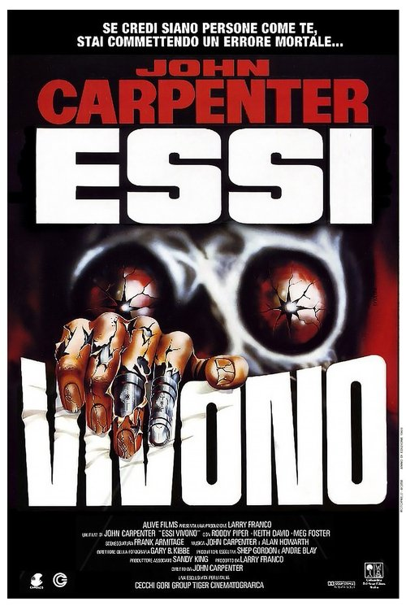
1988Чужие среди нас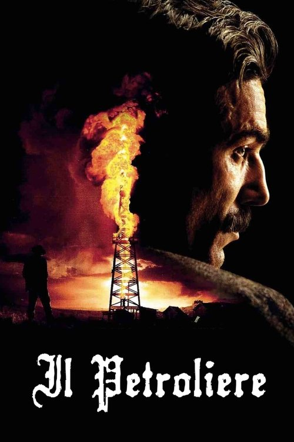
2007Нефть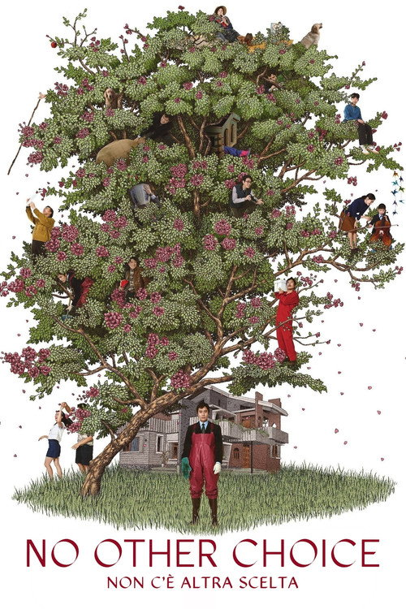
2025Метод исключенияКак кино отражает, производит и воспроизводит общественные отношения?
На экране
Показывает классы, труд, конфликты — как зеркало эпохи. Самый очевидный и самый поверхностный слой.
Сознание
Формирует представления о «нормальном»: что естественно, что желанно, кто прав. Это уже идеология.
Сам строй
Как товар и как практика кино поддерживает отношения, которые его и породили.
Один фильм — три разреза
Сквозной каркас курса. Любую теорию — Беньямина, Альтюссера, Грамши, Джеймисона — мы будем спрашивать: на каком из трёх уровней она работает?
Кино как индустрия
Кто владеет студией и камерой? На каком капитале и чьём труде сделан фильм?
Кино как высказывание
Какими художественными средствами фильм воспроизводит — или подрывает — идеологию?
Кино как жизнь
Как фильмы смотрят, обсуждают, распространяют; какое место они занимают в обществе.
Где мы в курсе
Курс идёт от оснований (марксовы категории) к форме (советский монтаж), затем к идеологии и аппарату и к современному анализу глобального капитализма. Первая лекция задаёт инструменты на все десять занятий.
Фильм — это товар
или идеология?
Марксистский ответ: и то и другое сразу — и одно работает через другое. Кино продаётся как вещь и при этом производит наши представления о мире.
Кино рождается внутри капитализма
Единственное из больших искусств, которое с первого дня — промышленное производство и рыночный товар одновременно. У кино нет «докапиталистического» прошлого: оно ровесник массового индустриального капитализма. Отсюда и точка входа метода — не сюжет, а цикл.
Производство
Студия-фабрика: разделение труда, смены, наёмный труд.
Обращение
Билет, прокат, франшиза, платформа — фильм циркулирует как товар.
Потребление
Массовая аудитория покупает готовый продукт.
Идеология
И тем же движением производит представления о мире.
Маркс кино
не видел
Маркс умер в 1883-м, Энгельс — в 1895-м, ровно когда братья Люмьер дали первый публичный сеанс. Ни один из них не видел ни одного фильма и никогда не писал о кино. Они анализировали капитал, труд, идеологию и класс — не кинематограф.
Поэтому курс не «излагает теорию Маркса о кино». Он применяет его категории к медиуму, которого Маркс не застал.

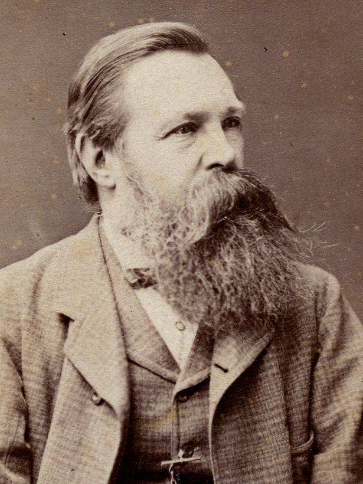
Не теория, а семейство теорий
«Марксистская теория кино» — конструкция XX–XXI веков: блок направлений из разных исторических контекстов, скреплённых лишь тем, что все опираются на введённые Марксом понятия.
Почему кино,
а не роман?
Марксистская критика искусства существовала и до кинематографа. Но именно кино стало её привилегированным объектом — и не случайно.
Литература — индивидуальное чтение и в основе своей кустарное письмо. Кино с рождения иное: оно собирает в одном предмете всё, что марксизм и так изучает.
Один фильм — миллионы зрителей почти одновременно.
альность
Производится фабрично, на крупный капитал.
тивность
Сотни наёмных работников вместо одного автора.
водимость
Тиражируется без потери оригинала — к этому вернётся Беньямин (л.4).
Прямо формирует массовое сознание.
Чего марксистский анализ не делает
Не выносит вердикт
«Хороший или плохой фильм» — не его вопрос. «Шедевр» и «проходняк» разбираются одинаково.
Не разбор стиля автора
Режиссёрский почерк интересен лишь как симптом, а не сам по себе.
Не композиция ради формы
Свет и кадр важны не «красотой», а тем, какую работу они выполняют.
А спрашивает он другое
Как фильм встроен в способ производства? Чьи интересы он подаёт как естественные? Какой труд — свой и чужой — он прячет? К этим трём вопросам метод сводит всё остальное.
Не «искать политику
в сюжете»
Марксистский подход — это набор категорий, связывающих экран с материальными условиями его производства и с производством сознания.
Отличие от широкой «социальной критики»: вопрос не только «что фильм говорит о неравенстве», но «как фильм встроен в способ производства и как он воспроизводит общественные отношения».
производства
Как общество производит свою материальную жизнь — фундамент анализа.
Положение в производстве, а не «доход» или «вкус».
Не ложь, а воображаемое отношение людей к реальным условиям.
Базис
и надстройка
Экономический базис — производственные отношения — образует фундамент, над которым возвышается надстройка: право, политика, искусство, идеи. Культура не висит в воздухе: она вырастает из материальной основы.
Способ производства материальной жизни обусловливает социальный, политический и духовный процессы жизни вообще.
Не «отражение», а сложная связь
Осторожно: не вульгарный детерминизм
Связь не механическая. Надстройка обладает относительной автономией и обратно влияет на базис. Поэтому неверно сводить фильм к «зеркалу экономики».
Весь курс — спор о том, насколько и как кино связано с базисом: жёстко (вульгарный марксизм), относительно автономно (Альтюссер), через гегемонию (Грамши).
Куда поместить фильм?
Фильм как товар
Производится наёмным трудом, продаётся ради прибыли. Экономика студии, проката, платформ.
Фильм как идея
Транслирует ценности, образы «нормального», представления о классе, семье, нации.
Фильм как связка
Кино связывает базис и надстройку — товар, который производит идеологию.
Идеология
Идеология — не «сознательная ложь» и не «партийная программа». Это само собой разумеющееся: то, что кажется естественным, вечным, единственно возможным, хотя на деле исторично и служит определённым интересам.
Сила идеологии — в её невидимости. Лучше всего она работает, когда мы её не замечаем.
Господствующими мыслями любой эпохи всегда были лишь мысли господствующего класса.
Кино натурализует
случайное
Идеологическая работа фильма — превращать историческое и спорное в естественное и очевидное: «так устроен мир», «иначе не бывает», «хороший герой думает так».
Поэтому марксистский анализ читает фильм «против шерсти»: ищет, что подаётся как само собой разумеющееся, и спрашивает — чьим интересам это служит?
натурализуется
Рынок, конкуренция, семья, гендерные роли, «нормальная» жизнь.
Идентификация с героем, «реалистичность», happy end, монтаж «как в жизни».
То, о чём фильм молчит, иногда красноречивее сюжета.
Товар и товарный
фетишизм
В товаре общественные отношения между людьми принимают фантастическую форму отношения между вещами. Мы видим цену и вещь — но не видим труд и отношения, которые за ними стоят.
Определённое общественное отношение людей принимает для них призрачную форму отношения вещей.
Что фетиш прячет
Не ошибка зрения, а форма
Над водой — то, что товар показывает сам: вещь и цену. Под водой — труд и общественные отношения, которые он же делает невидимыми.
Фетишизм — не заблуждение, которое можно «исправить, приглядевшись». Это реальная форма, в которой вещи являются нам на рынке.
«Фабрика грёз» — это прежде всего фабрика.
Кино прячет собственный труд
Голливуд зовёт себя «фабрикой грёз», но слово «грёзы» затушёвывает слово «фабрика». Зритель потребляет готовый блеск и не видит индустриального процесса.
Двойное сокрытие
Фильм-товар прячет свой труд (титры мелькают за секунды) и часто прячет чужой труд — изображая капитал без рабочих, богатство без производства.
Товар, который производит идеологию
Товар
Производится и продаётся ради прибыли — материальная основа.
Идеология
Формирует представления о «нормальном» мире — символическая работа.
Фетишизм
Товарная форма сама прячет труд — экономика и идеология в одном жесте.
Тезис курса: кино одновременно товар и идеологический аппарат, и второе работает через первое.
Две «марксистские теории кино»
Марксисты как творцы
Как делать революционное кино: поэтика монтажа, очуждение, Третий кинематограф. Эйзенштейн, Вертов, Годар.
Марксисты как критики
Как читать кино (особенно капиталистическое) как идеологию и товар. Франкфурт, Альтюссер, Screen, Джеймисон.
Эти два предприятия часто называют одним именем — и часто конфликтуют (лекция 2: ортодоксия осуждала формалистов). Курс держит оба смысла в поле зрения.
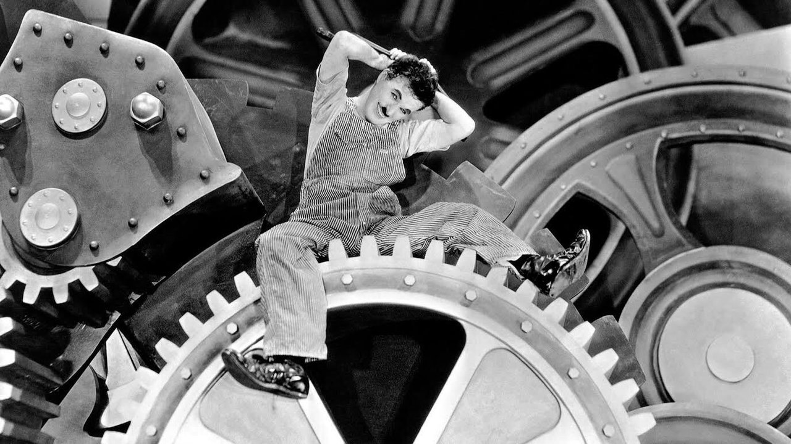
Новые времена
временареж. Чарли Чаплин
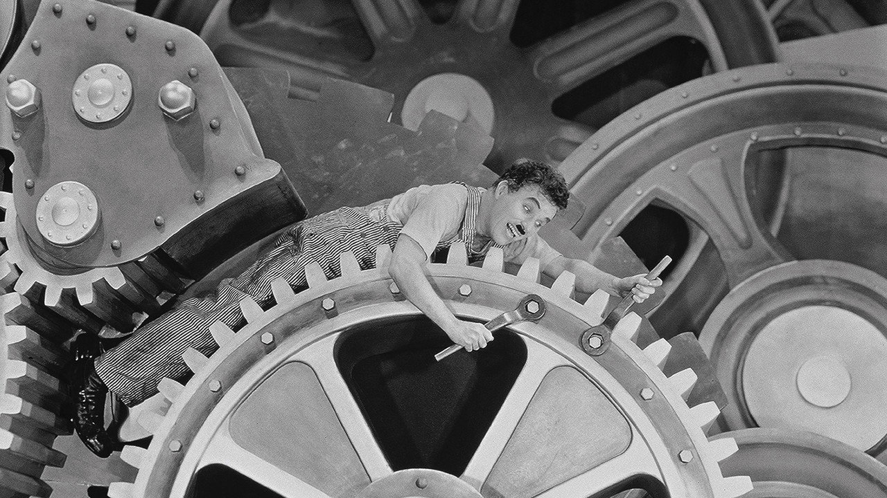
Новые времена
Бродяга на конвейере: тело человека подчинено ритму машины. Знаменитые сцены — закручивание гаек до автоматизма и «кормящая машина», призванная сократить обеденный перерыв.
Идеальный вход в категорию отчуждённого труда: рабочий не управляет процессом — процесс управляет им.
Как и кем
снят фильм
1936 год, мир ещё не вышел из Великой депрессии. Чаплин снимает на собственной студии и выпускает через United Artists — компанию, которую он сам соучредил, чтобы не зависеть от крупных студий.
Ирония, важная для марксистского чтения: фильм о порабощении рабочего конвейером сделан автором, который как раз контролировал собственные средства производства.
Депрессия, безработица, страх перед машиной и фордизмом.
Почти немой в эпоху звука: Чаплин сопротивлялся диалогу — техника как насилие над формой.
собственник
Независимое производство против студийной фабрики.
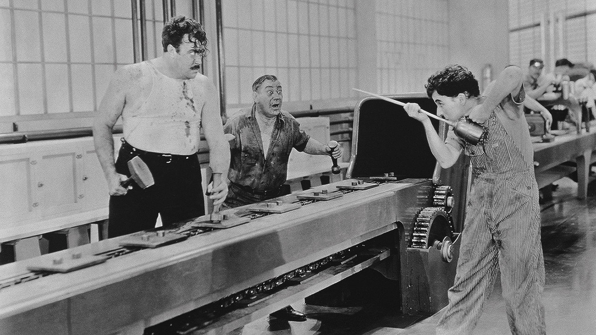
Конвейер
Тело рабочего продолжает дёргаться в ритме машины даже после смены — буквальная визуализация отчуждения: труд перестаёт принадлежать тому, кто его выполняет.
«Кормящая машина» переводит в гэг идею, что капитал стремится сократить даже время отдыха, превратив всё в производительное время.
Комедия как
метод критики
Чаплин не читает мораль и не показывает митингов. Критика встроена в телесную клоунаду: чем точнее тело повторяет движение машины, тем очевиднее абсурд системы.
Смех здесь — инструмент очуждения: он делает привычный заводской труд странным и потому видимым.
Монтаж и движение синхронизированы с тактом конвейера.
Пластика Чаплина — главный «спецэффект» фильма.
Гигантские шестерни делают человека буквально мелким.
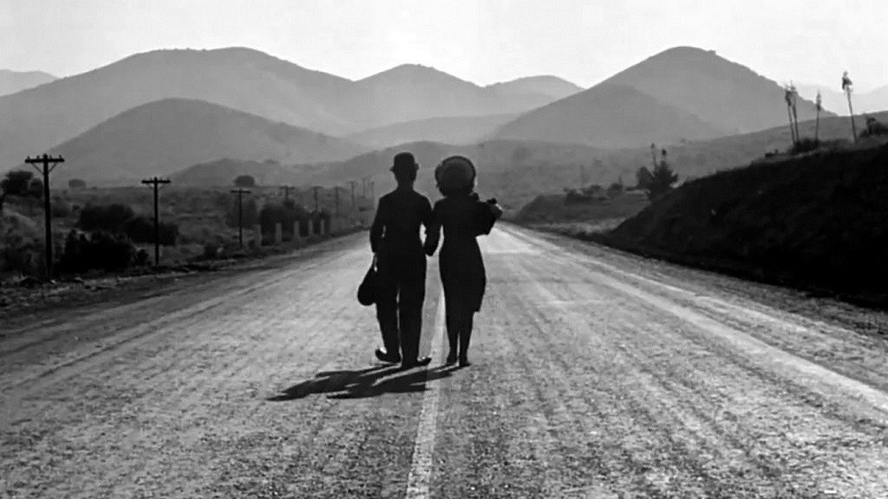
Развязка: не преобразование системы, а уход из неё — дорога вдвоёмЧто фильм делает блестяще
Показывает процесс производства и тело рабочего — то, что коммерческое кино обычно прячет. Конвейер выведен из-за кулис на авансцену.
Где пределы
Развязка — уход из системы, а не её преобразование. Критика тейлоризма скорее гуманистическая и ностальгическая, чем анализ классовой борьбы.
Урок метода
Изобразить отчуждение — ещё не значит дать его марксистский анализ. Чаплин сочувствует рабочему, но решение предлагает индивидуальное.
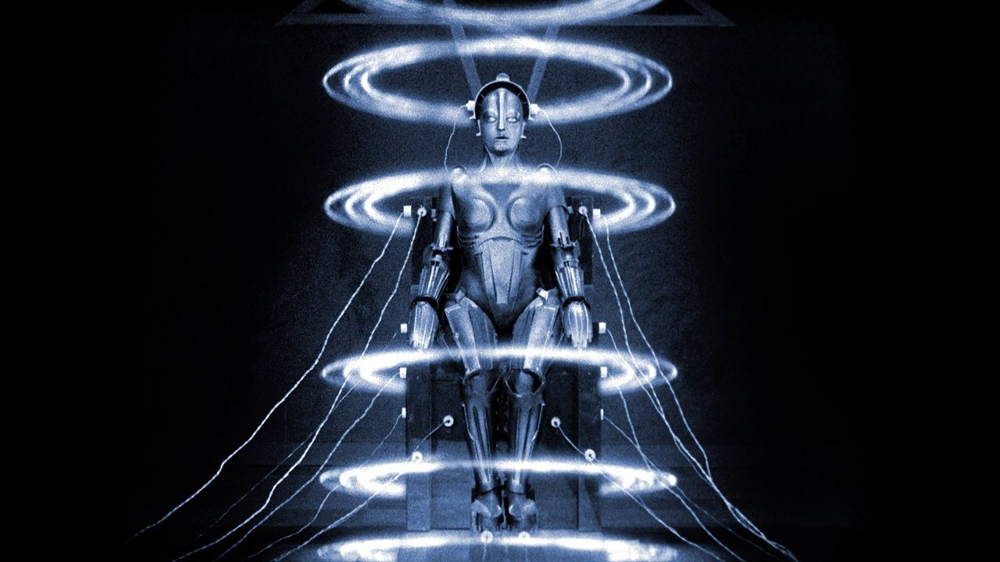
Метрополис
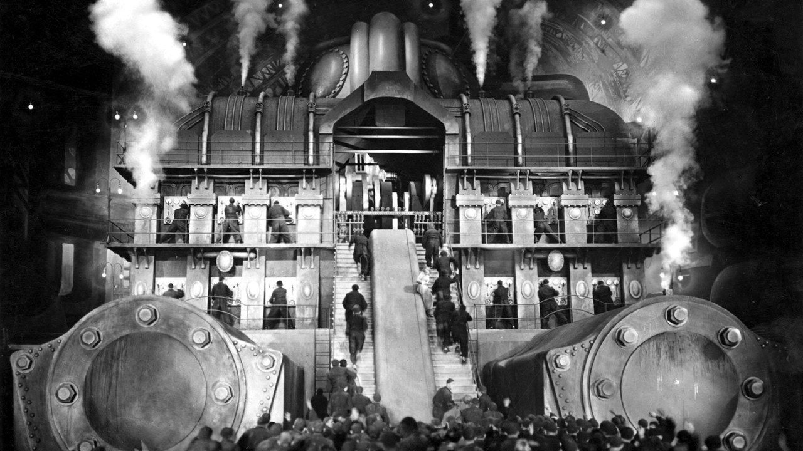
Метрополис
Город будущего разделён по вертикали: праздные хозяева наверху, рабочие у машин внизу. Машина-«Молох» буквально пожирает рабочих.
Классовое разделение овеществлено в архитектуре — почти учебная иллюстрация базиса и надстройки.
Дорогой фильм
Веймарской студии
Снят на студии UFA — один из самых дорогих немых фильмов в истории; его бюджет едва не разорил студию. Веймарская Германия конца 1920-х: кризис, инфляция, страх перед массами и машинами.
После премьеры фильм жестоко перемонтировали; часть плёнки считалась утраченной до находки почти полной копии в Буэнос-Айресе и реставрации 2010 года.
ленность
Сценаристка Теа фон Харбоу позже стала нацисткой; финал примиряет классы — политика фильма спорна.
Гигантский бюджет сам по себе говорит о мощи капитала, который фильм критикует.
Смотреть реставрацию 2010 г. — иначе теряется логика сюжета.
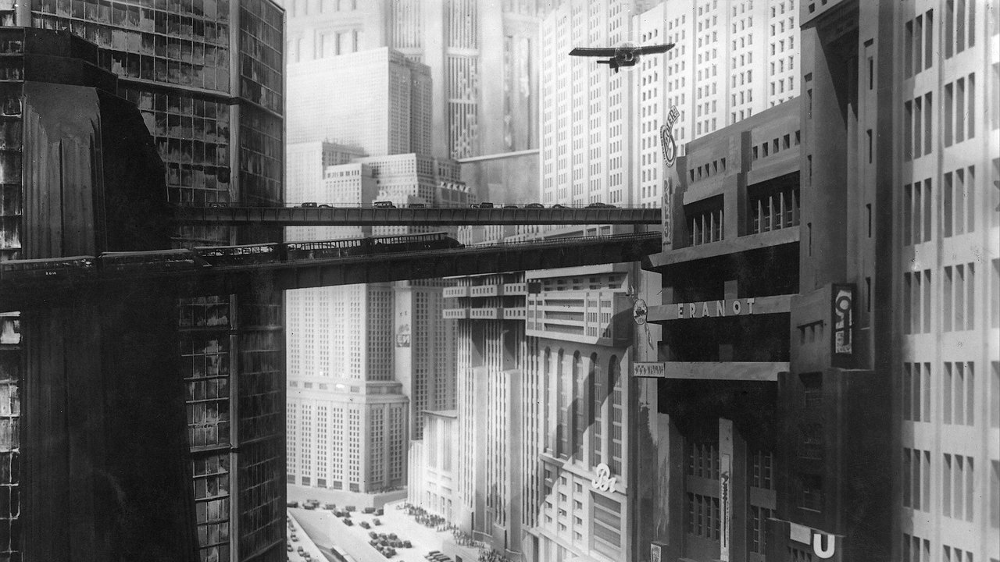
Архитектура как классовая карта
Вертикаль города — это базис и надстройка, отлитые в декорациях: внизу производство и машины, наверху досуг и власть.
Видение машины как Молоха превращает фабрику в алтарь, пожирающий рабочих: кино даёт абстрактному социальному отношению зримую форму.
Мария«Метрополис»
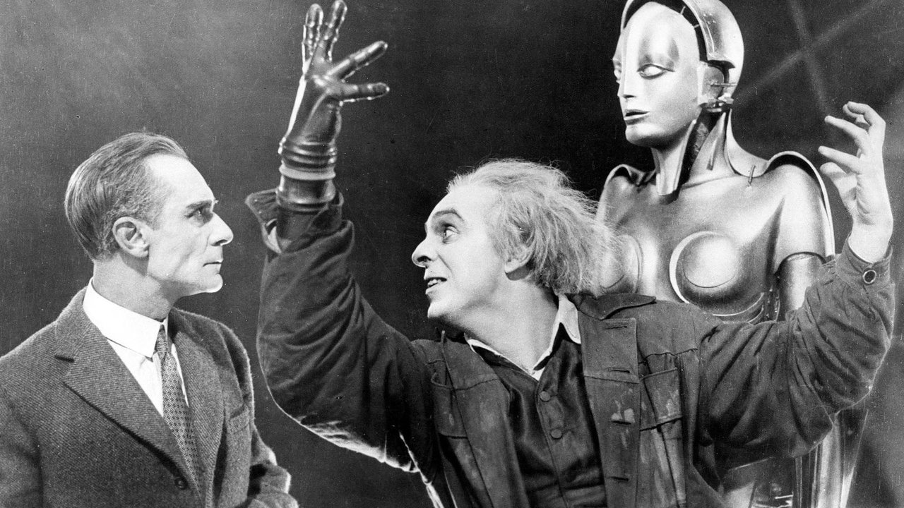
Двойник и ложное сознание
Робот, которому придали облик Марии, подстрекает рабочих разрушить машины — и те затапливают собственный город, едва не погубив своих детей.
Это образ ложного сознания и манипуляции массами: подложный «вождь» направляет гнев рабочих против их же интересов. Прямой мост к идеологии (категория 02) и к лекции 6.
Экспрессионизм
и масса-орнамент
Монументальные декорации, геометрия и синхронные толпы рабочих, движущихся как единый механизм. Люди превращены в узор — то, что Кракауэр позже назовёт «массой-орнаментом»: индивид растворён в декоративном строе.
Форма сама делает классовое сообщение: верх — свет и простор, низ — тень, ритм, строй.
Сила фильма
Один из мощнейших образов классового общества в истории кино — и редкий случай, когда показан сам труд, а не только его плоды.
Идеалистическая развязка
Финальная формула — «посредник между головой и руками — сердце» — предлагает примирение классов через чувство, а не через изменение отношений производства.
Урок метода
«Метрополис» гениально изображает класс, но предлагает немарксистское решение: конфликт снимается рукопожатием. Различать репрезентацию класса и анализ классовых отношений — ключевой навык курса.
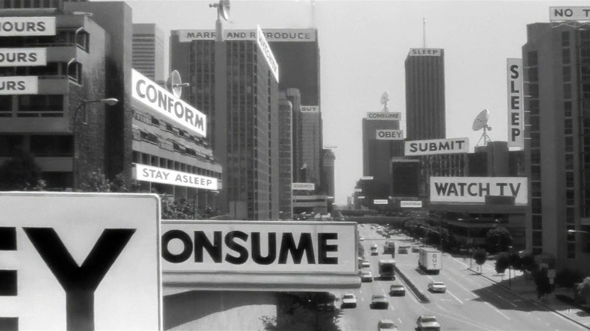
Чужие среди нас
среди насреж. Джон Карпентер
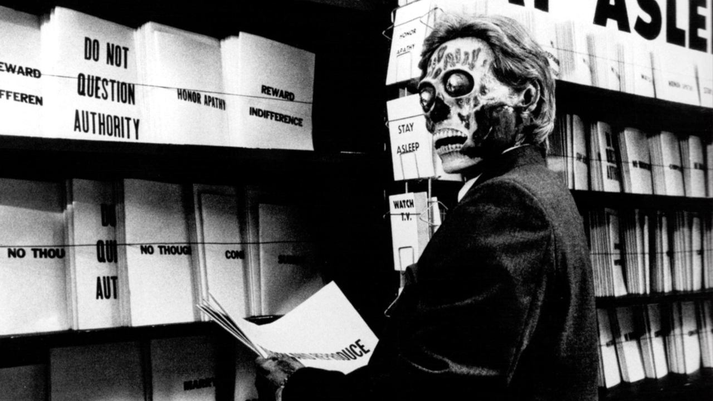
Чужие среди нас
Герой находит очки, сквозь которые видны скрытые сообщения рекламы: «ПОДЧИНЯЙСЯ», «ПОТРЕБЛЯЙ», «НЕ ДУМАЙ». Под ними — правящий класс инопланетян.
Поп-аллегория самого понятия идеологии — мост к лекциям 6 и 10.
Памфлет против
рейганомики
Карпентер снял фильм как прямую сатиру на 1980-е: дерегуляцию, культ потребления и яппи рейгановской Америки. Инопланетяне — метафора правящего класса, выкачивающего ресурсы планеты ради прибыли.
Жанр (фантастический боевик категории B) — сознательный выбор: радикальное сообщение спрятано в массовом развлечении, которое само продаётся как товар.
Неолиберальный поворот, рост неравенства, телевидение и реклама.
B-movie как троянский конь для политической критики.
Антипотребительский фильм — сам рыночный продукт.
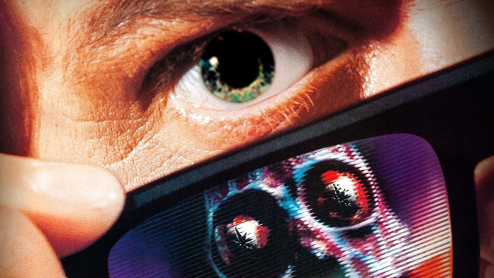
Очки, которые показывают идеологию
Надев очки, герой видит за яркой рекламой прямые команды: подчиняйся, потребляй, размножайся, не думай. Фильм буквализует идею, что идеология — скрытый приказ внутри «нейтрального» образа.
Почти иллюстрация альтюссеровского тезиса: идеология окликает нас, делая послушными субъектами.
Чёрно-белое
как разоблачение
Приём прост и гениален: «истинная» реальность сквозь очки показана чёрно-белой, цветной мир — это и есть иллюзия. Зрение героя = критическая оптика, наложенная на привычную картинку.
Знаменитая шестиминутная драка из-за очков формой говорит то же, что теория: выйти из идеологии не легко и не приятно — друга приходится принуждать «увидеть».
Цвет = иллюзия, ч/б = разоблачение.
в кадре
Команды OBEY / CONSUME вместо рекламы.
Сопротивление прозрению — метафора инерции идеологии.
Сила фильма
Делает абстрактное понятие идеологии осязаемым и помнит про экономику: за идеологией стоит класс, извлекающий прибыль.
Ловушка «магических очков»
Фильм намекает, что идеологию можно просто «снять», как пелену, и увидеть голую истину. Но идеология — не слой поверх реальности: мы живём внутри неё.
Урок метода
Жижек заметит позже: показательно, что очки больно надевать. Выход из идеологии — не «прозрение», а труд и борьба. К этому вернёмся в лекции 10.
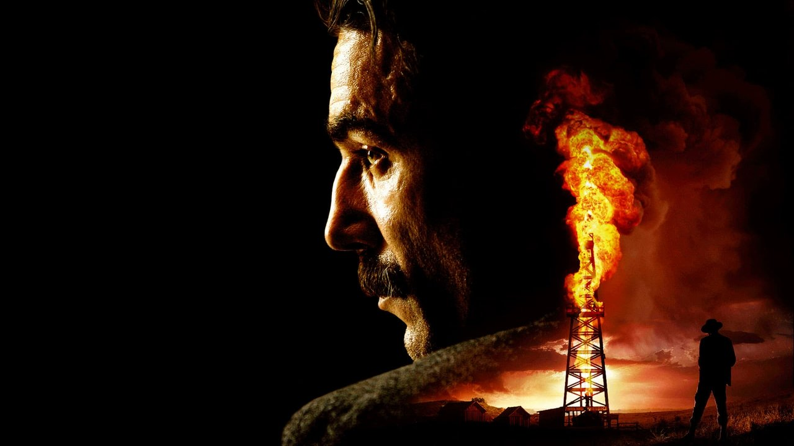
Нефть
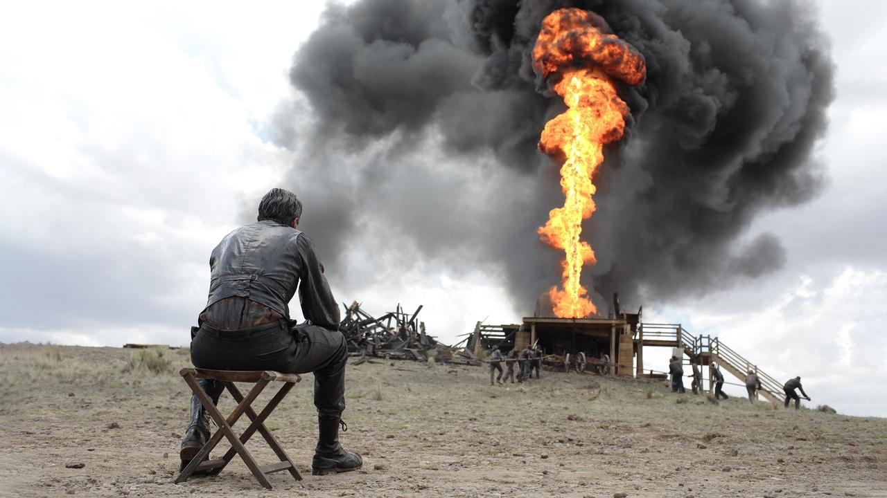
Нефть
Старатель Дэниел Плейнвью на рубеже XX века выкачивает нефть, скупает землю и людей, выстраивая империю на лжи и насилии. По роману социалиста Эптона Синклера «Нефть!».
Фильм о самом рождении капитала — и о том, как он расправляется с религией.
Богатство, нажитое
насилием
Маркс называл «первоначальным накоплением» кровавое, насильственное происхождение капитала: захват земли, обман, экспроприацию. Плейнвью — его воплощение: природа (нефть) превращается в товар, община — в ресурс, доверие — в инструмент.
«Нефть» показывает то, что капитал обычно прячет: его богатства нажиты нечестным путём, в самой их основе — насилие.
Насильственное происхождение капитала.
приация
Земля и труд отняты у общины.
нефть
Природа превращена в меновую стоимость.
церковь«Нефть»
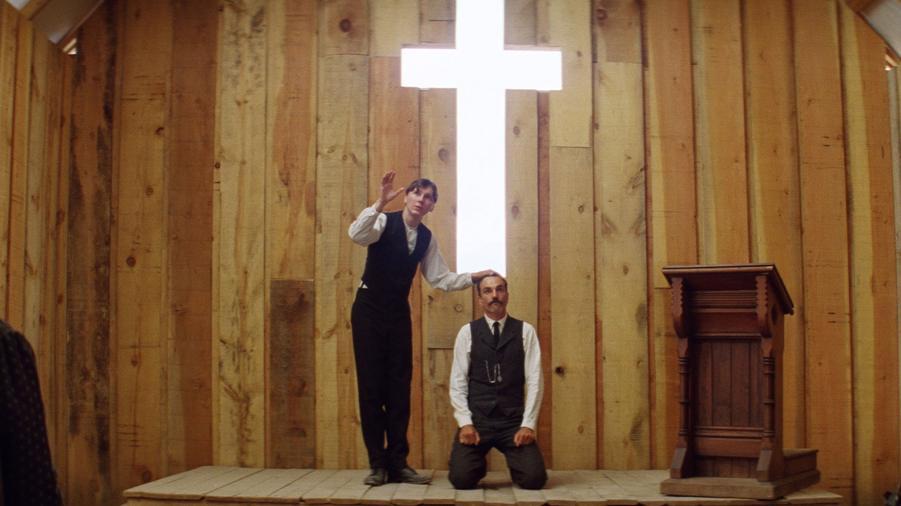
Капитал крушит церковь
Чтобы получить право на трубопровод, Плейнвью вынужден публично креститься у проповедника Илая — религия инструментализирована. А в финале капиталист заставляет Илая отречься от веры («я — лжепророк, Бог — суеверие») и убивает его.
Базис буквально забивает надстройку: старая идеология — церковь — повержена новой силой, капиталом.
Эпос без героя
для сочувствия
Андерсон снимает рождение капитала как мрачный эпос: тревожная музыка Гринвуда, долгие безмолвные сцены труда, монументальный пейзаж. Зрителю не дают «положительного героя» — только холодную логику накопления, воплощённую в Плейнвью.
Форма не приглашает отождествиться, а заставляет наблюдать механизм — лёгкое очуждение (мост к л. 5).
Рождение капитала как мрачная сага.
Тревожный саундтрек вместо сопереживания.
Не с кем отождествиться — только логика капитала.
Что показывает фильм
Сразу два тезиса Маркса: первоначальное накопление (богатство из насилия и экспроприации) и религия как опиум — идеология, которую капитал то использует, то крушит. Идеальный фундамент для всего курса.
Где предел
Фильм объясняет зло капитала через одну чудовищную личность — есть риск увидеть проблему в «плохом человеке», а не в системе. Марксистское чтение возвращает фокус с психологии Плейнвью на логику капитала.
Урок метода
Капитал — не злодей-одиночка, а общественное отношение; «Нефть» лишь даёт лицо тому, что на деле безлично.
Что добавляет марксистское чтение
Труд
Показал производство — но решил уходом, не анализом.
Класс
Овеществил класс — но примирил его «сердцем».
Идеология
Сделал идеологию видимой — но как снимаемую пелену.
Накопление
Показал кровавое рождение капитала — но через одну личность.
Все четыре изображают что-то важное о капитализме. Марксистский анализ идёт дальше «социальной критики»: он спрашивает про способ производства, класс и товарную форму — и замечает, где фильм останавливается на полпути.
Вопросы к дискуссии
Если фильм критикует капитализм, но сам является прибыльным товаром, — отменяет ли товарная форма его критику? Сравните Чаплина, Ланга, Карпентера и Андерсона.
Где граница между «изобразить класс» и «дать марксистский анализ класса»? Достаточно ли первого?
Можно ли «снять очки» и выйти из идеологии — или это само по себе идеологическая фантазия? Что говорит финал «Чужих среди нас»?
Раз Маркс кино не видел, в каком смысле эти чтения вообще «марксистские»? Что именно делает анализ марксистским?
Ключевые понятия
производства
Исторический способ, которым общество производит материальную жизнь.
Производительные силы и производственные отношения.
Право, политика, идеи, искусство, кино над базисом.
Положение группы в отношениях производства.
Отделение работника от продукта, процесса и себя.
Воображаемое отношение к реальным условиям; «само собой разумеющееся».
сознание
Искажённое понимание своих интересов (ранняя модель идеологии).
Продукт труда, произведённый для обмена на рынке.
фетишизм
Отношения между людьми являются как отношения между вещами.
зация
Подача исторического и спорного как естественного и вечного.
К просмотру
Лекция построена на четырёх фильмах — посмотрите их целиком до семинара.
временаЧарли Чаплин · США · 87 минСцены: конвейер · «кормящая машина». Категория — отчуждённый труд.
среди насДжон Карпентер · США · 94 минСцены: очки · драка из-за очков. Категория — идеология.
К чтению
Монтаж и спор о форме
Может ли быть революционной сама форма фильма? И почему ортодоксальный марксизм осудил авангард как «формализм»? Спор реализм vs. формализм: Лукач против Брехта.